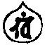
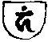
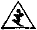
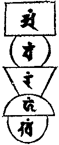

大正新脩大藏經 第19冊
No.973 尊勝佛頂脩瑜伽法軌儀 (2卷)
【唐 善無畏譯】
第 1 卷
No. 973
尊勝佛頂脩瑜伽法軌儀卷上
尊勝真言序品第一
稽首一切薄伽梵 及以東方金剛部
雄猛阿閦金剛藏 寶生如來虛空寶
達磨句攞無量壽 觀自在王蓮華眼
毘首羯磨大牟尼 不空成就薩埵尊
四波羅蜜四供養 八大佛頂轉輪王
為利一切修瑜祇 速成尊勝大悉地
樂修無相說瑜伽 為求有相兼說相
有無一體真大空 是故我今修瑜伽
文字觀照實相智 三種般若無一體
身口意業三密門 應化法身即三密
五輪即是五智輪 五智便成五分身
五輪盡攝法界輪 三密即是三身故
是故我今禮瑜伽 瑜伽即是大日尊
是故我今修瑜伽 為利法界諸含識
我今略說尊勝陀羅尼法。即是除一切障滅一切地獄傍生等身。故號尊勝佛頂之義。是故如來為善住天子。說除七遍畜生之身。即此修瑜伽者不同事法。若於一念頃證無生。轉五智成五分法身。悟三密即三身。初發心時便越百六十種心。度三無數劫行。證普現色身三昧耶。即是初發心時便成正覺。是故我今為求有相者。為說有相。若求無相者兼說無相念誦之法。雖說多種。我今略說兩種盡攝一切。一者為求世間除災增益等故。略說有相之法。二者為求無上菩提修瑜伽者。即說無生頓入普現色身之法。其世間念誦者略有四種。所謂除災增益降伏攝召即是。方圓三角半月曼荼羅等。及護摩爐法即是。四種念誦。若增益念誦時。每真言上下。加na 娜maḥ 莫二字。若除災念誦時。真言初後加以svā 娑嚩(二合)hā 賀二字。若降伏念誦時。加以hūṃ 吽pha ṭ 泮吒(二合)三字。若攝召念誦時。每真言前後加以hrīḥ 訶哩(二合)haḥ 賀(入)二字即是。除災增益降伏攝召增加句。並稱所為者名字。其色相者黃白赤青是。或以面上及遍身衣服皆想本色。所有供養香華塗末香。并諸飲食黃白赤青香美淡辛等。各依本法相應作之。護摩等法各有殊異所有焚燒柴木等。亦須臨時看取本法相應作之。
尊勝真言持誦法則品第二
復次若欲作法念誦時。先須入淨法界三摩地。於頂上想有raṃ 藍字。三角智火形。色如日初出時。遍身為智火焚燒四大五蘊。唯有空寂其法界真言曰。
娜摩三曼多勃馱喃[口*藍]raṃ
心念口誦想頂及遍體為三角智火形如上圖。次即入五輪三摩地。便入金剛輪三摩地。觀己身臍已下方形紫金色。為金剛輪。便誦真言曰。
娜麼三曼多勃馱喃阿a
每字想時。口誦並歸命。心想本體字。其形如圖。阿字金剛輪黃色。次觀臍中va 嚩字。為大悲水輪色如商佉或如乳色。形如滿月。如圖在下。鑁字水輪真言曰。
娜摩三曼多勃馱南鑁vaṃ
次說火輪真言曰。
那摩三曼多勃馱南[口*藍]raṃ
當心上觀三角火輪。色如日初出時。光焰猛利如劫火形。其形如三角曼荼羅。
次想ha 訶字。大空點形如仰月黑色。名haṃ 含字。即是天風輪。安置於眉上靉靆如劫風。
次觀於頂上khaṃ 欠字。大空輪具一切色種種眾形。號為大空輪。此名為五智輪。謂地水火風空。即以普通印加持五支。即成真實智。即說普通真言曰。
唵(一)薩婆他欠(二)嗢那蘗諦(三)薩叵囉醯[璊-王+月](四)伽伽那劍(五)莎嚩(二合引)賀(引六)
次以定慧二手叉十輪。頂戴及以加五支。即成金剛不壞身。即入三昧耶故。即同一切諸佛菩薩三昧耶身。作三昧耶身施作佛事。先入三昧耶。真言曰。
唵(一)嚩日囒(二合二)惹里(三)三麼野(四)
每加印處。並誦真言而加持之。其手印相智定相叉。齊輪合掌以智押禪。此名一切佛心三昧耶印。因作此印生一切印。是故先作此印從三昧耶起。即同從三昧加持五處。頂及咽喉即名五支。其五輪圖如左。
大空點具種種色。名為欠字唅字風大藍字火大鑁字水大阿字地大。金剛輪腰下。大空輪頂上。風輪眉上。火輪心上。水輪臍中。
既去有為五蘊四大立無為金剛不壞五蘊。即名無漏智身即無為。曼荼羅地亦然。其曼荼羅五輪加持。名為地水火風空。去有為五大立無為五大。故先觀曼荼羅地相(上)時。先從空起上觀風等如左(圖)。
aṃ vaṃ raṃ haṃ khaṃ

以淨法界心。先燒曼荼羅地中穢惡觸等。然後依次第安立五大輪。即以結界護身辟除。光顯淨除三業堅固菩提心等。是故復入金剛三昧耶真言及印。真言曰。
唵(一)嚩日囉(二合)滿馱(二)怛囉(二合)吒(三)
其手印相。作前金剛掌印。便合作拳置繫心上。當繫心時散其合拳雙下三繫。此名結金剛界印。三繫心已。由是真言及印力故。能淨三業堅菩提心。
次於持誦處遣除穢濁及為障者。凡獻香華塗香末香并諸供養。辟除去垢發光增威。作金剛界結諸方界。護身及伴護居止處。如上所說及有未詳。臨事要須一一皆誦此真言作印護持。能使成就無諸障難。當以降三世真言及手印而加持。各能成辦諸事等。
次誦降三世真言曰。
唵(一)寧(上)三婆(二)嚩日囉(二合三)[合*牛](四)
此名降三世尊言及手印。名成辦諸事者。其印相智定各為拳。竪其風幢。屈二大空輪入掌內。以地水火三輪押之即成。其印以定手印置在心上。以智印用觸諸物。及結地界四方乃至上下等界。右轉三遍上下即成結界。
尊勝佛頂真言召請本尊等品第三
復次應警覺諸佛及八大佛頂輪王或本部尊等。從三昧耶起觀瞻。愍念真言者故。降赴道場。所謂發生真言曰。
唵嚩日囉(二合二)底瑟吒(二合三)
其手印相。智定二手。地輪鉤鎖相連。其大空令入掌中。以水輪及以火輪雙押空輪。風幢向前相著。以掌向上便誦真言。以印從下發起諸尊。是名發生之印。
次請本尊等。真言手印發請真言曰。
oṃ va jra sa maṃ ja jaḥ
唵(一) 嚩 日囉(二合) 三 芒(二) 惹 惹(重急呼)(三)
其手印相以智定相叉作金剛拳。不解此拳。以智風輪撥智大空。定手亦然。如是三彈即成發請諸尊之法。心想本尊所在之處建竪樓閣。想其樓閣內有寶蓮華。上觀大圓明。內有九輪。金剛界道每輪中本尊令坐。圖如左。
其大圓明內分為九圓。八寶瓶。十二金剛杵。四寶輪。從八寶瓶口竪八金剛杵。承四金剛輪。從輪四面橫拄四金剛。每瓶及金剛皆繼綵帶。靉靆垂布大圓明內。各坐九聖者。中心大毘盧遮那如來。頭戴五智寶冠。坐七師子座上。結跏趺坐結法界印。自餘諸尊。下曼荼羅品具明。
迎請真言曰。
唵(一)嚩日囒(二合引)俱捨(二)惹(急重呼三)jaḥ
既蒙來赴。次應請入念誦道場請入真言曰。
唵(一)嚩日囉(二合)跛捨(二)吽(三)hūṃ
其手印相。以金剛拳竪二地輪。二空輪交結入掌。右押左。既奉請入作三昧耶。依請而住。請住真言曰。
唵(一)嚩日囉(二合)建吒(二)阿(短急呼三)aḥ
其手印相。作金剛拳竪二地輪。二空輪交結入掌右押左。請召乃至歡喜。令其堅固故。而誦真言。堅固真言曰。
唵(一)薩囉嚩(二合)怛他蘗多(二引)毘三菩地(三)捺[口*栗](二合)荼(四)嚩日囉(二合)底瑟姹(二合五)
其手印相。智定相拍便成堅固。
次應灌沐本尊及己身。灌頂真言曰。
唵(一)嚩日囉(二合二)諾迦咤(去)
其手印相。以其智手水輪空輪相捻。餘輪並竪按誦水器。想沐浴本尊。灑印己身頂上。奉獻閼伽。想灌尊頂。亦用此印拜誦真言七遍。
尊勝佛頂真言修瑜伽奉獻香華品第四
先奉燒香真言曰。
唵(一)嚩日羅(二合二)度弊(三)
其手印相。作金剛拳按其香上。持誦真言經一七遍。即成真實寶香遍滿十方虛空法界。
次奉獻華真言曰。
唵(一)嚩日囉(二合二)扶瑟(二合)弊(三)
其手印相。合金剛掌用印加持。誦真言經一七遍。即成真實寶華等。
次奉獻寶燈真言印。真言曰。
唵(一)嚩日囉(二合二)地幣(三)
其手印相。作金剛拳。竪二大空置於心上。持誦真言經七遍。便成寶燈遍虛空界。
次奉塗香真言曰。
唵(一)嚩日囉(二合二)誐度(三)
其手印相。智定覆掌散舒其輪。以智大空押定空輪。持誦真言經一七遍。
次當歸依三寶出罪懺悔隨喜功德勸請功德。常住發菩提心讚歎佛德發勝上願。其歸命三寶者。願從今身乃至當坐菩提道場。歸依如來無上三身。歸依方廣大乘法藏。歸依一切不退轉菩薩摩訶薩僧。應當如是歸命三寶。次應出罪懺悔者。自從無始乃至今時。煩惱覆源久流生死。三種業障造罪無邊。今日誠心發露懺悔。惟當廣懺悔令使罪除。次應發菩提心者。始從今日乃至當坐菩提道場。誓發無上大菩提道心。誓度無量諸有情類願皆令離生死大苦。今所發心復當遠離我法二相。我法平等無自性故。應當如是發菩提心。以真言加持。令菩提心堅固不退。真言曰。
唵(一)菩提質多(二)牟怛跛(二合)陀夜弭(三)
其手印相。合金剛掌發菩提心。持誦真言經一七遍。隨喜功德者。三世如來及諸菩薩。為眾生故備無量功德。所有功德我當隨喜。勸請常住者。唯願諸佛久住於世。依瑜伽理趣無住涅槃。復請轉大法輪遍十方界。發勝上願者。願諸眾生多饒財寶。常當勇施具足智慧。常懷大忍樂作善緣。得宿命智悲念有情。願諸眾生所生之處。常獲如是種種勝事。
次運心供養。以心運想。水陸諸華無主所攝。遍滿虛空盡十方界。及以人天上妙塗香雲海燒香燈明幢幡種種鼓樂歌舞妓唱真珠羅網懸諸寶鈴。華鬘白拂微妙。磬鐸寶繩羅網如意寶樹衣服之雲天。諸厨膳上妙香羹宮殿樓閣寶柱莊嚴天。諸嚴身頭冠瓔珞如是等。瑜祇運心遍滿虛空。以至誠心如是供養最為勝上。是故行者以決定心。而行此法運心供養。誦持真言及作手印。如上所想悉皆成就。運心真言曰。
唵(一)薩婆他(二)欠(三)嗢怛蘗帝(四)薩叵(二合)囉醯麼暗(二合五)誐誐娜(六)劍(七)婆嚩(二合引)賀(引八)
誦真言七遍。即成普通供養。
其手印相。作合金剛掌置於頂上。誦此真言經七遍。即成就諸供養具。次以真言及印護身五處。真言曰。
唵(一)質多(二)鉢囉(二合)底(三)吠能(四)迦路弭(五)
誦此真言令住一切如來具足三昧耶。能辦一切諸佛事業。速得成就。
尊勝真言修瑜伽五智品第五
復次修瑜伽瑜祇者。自住妙菩提心故。速入觀菩提心智。觀菩提心真言曰。
唵(一)菩地質多(二)牟怛簸(二合)那夜弭(三)
此名發菩提心真言。亦名大圓鏡智。速令發菩提心。初發心時便成正覺。即是法身之義。
次說平等性智真言曰。
唵(一)底瑟姹(二合二)縛折囉(二合三)
次說成所作智真言曰。
唵(一)拽他(二)薩囉嚩(二合)怛他蘗多(三)娑多(二合)他痕(四)
次說妙觀察智真言曰。
唵(一)娑嚩(二合)婆嚩(二)戍(入)度痕(三)
次說方便究竟智真言曰。
唵(一)薩囉嚩(二合二)三謨痕(三)
此名方便究竟智。化身之義。或進修門中以方便為究竟。即是後得智法身之義。此明中胎五方安之。其五智真言。印相以智定二羽外叉。合掌為拳。直竪二火輪。以二地輪亦合。二風輪屈各在二火輪背上節。去二三分許。二大空並竪。形如五股金剛。以此一印通用五智。後乃用大日法界印加持五處。即成具足五分法身萬德之身。其法界印相。以權智各作金剛拳。智手執權風幢加持五處。便住當心上。己身為毘盧遮那如來之身。頭上五智佛寶冠。即是五頂輪王。具五智義。便以一切佛頂輪王心印真言加持五處。
其一切佛頂輪王心真言曰。
唵(一)度嚕[合*牛](二合二)[合*牛](三)泮吒(四)
其手印相。兩手內相叉為拳。竪直二中輪即是。此印真言通一切用辨事。召請發遣結界護身一切處通用。復次說本尊真言曰其印相者兩手外叉。合掌為拳曲鉤右風幢。即加持五處。增益時用。或一手作攝召時用又經中所說以兩手合掌。以右手大指押左大指上。除災時用。若降伏念誦時。以左押右即是。便執數珠合掌頂戴。當心上執數珠念誦。當一一與本法相應念誦。速得成就所求之願。除不至心及以惡事。却被自損。
尊勝佛頂修瑜伽本尊真言品第六
復次我今略說修本尊真言法。每月十五日自誦。或遣人誦滿一千八遍。能除一切災殃長壽增福。或每日三時。觀本尊心上圓明中。或觀己身為本尊。於心上圓明中。旋轉安布尊勝真言。如字輪形。一一字隨本法。臨時本色相應放光。皆變成為曼荼羅聖眾。即是己身為尊勝佛頂法界曼荼羅體。其本尊尊勝佛頂真言曰。
na mo bha ga va te  trai lo kya
trai lo kya
南 謨 薄 伽 婆 諦(一) 怛[口*(隸-木+士)](二合) 路 迦(吉耶反)(二)
pra ti vi śi ṣṭa ya
鉢囉(二合) 底(丁以反) 微 室 瑟咤(二合) 耶(三)
bu ddhā ya bha ga va te ta dya thā
勃 馱 耶(四) 薄 伽 婆 帝(五) 怛 姪 佗(去)(六)
oṃ vi śu ddha ya sa ma sa ma
唵(七) 微 戍 馱 耶(八) 娑 摩 三 漫
nta va bhā sa spha ra ṇa ga ti
多(九) 嚩 皤(去) 娑(十) 薩頗(二合) 囉 拏 竭 底
ga ha na sva bha va vi śu ddhe
伽 訶 那(十一) 薩嚩(二合) 婆 嚩 微 秫 提(十二)
a bhi ṣiṃ ca tva maṃ su ga
阿 毘 詵 者 覩 摩暗(二合)(十三) 蘇 蘗
ta va ra va ca nā a mṛ tā
多 嚩 囉 嚩 者 那(十四) 阿 謎[口*栗](二合) 多(引)
bhi ṣai kai ā ha ra ā hā ra
鼻 曬 罽(十五) 阿(去) 訶 囉 阿(去) 訶 囉(十六)
ā yu sa tdhā ra ṇi śo ddha ya
阿 瑜 散 陀 羅 尼(十七) 輸 馱 耶
śo ddha ya ga ga na vi śu ddhe u
輸馱耶(十八) 伽 伽 那 微 秫 提(十九) 隖
ṣṇī ṣa vi ja ya vi śu ddhe sa
瑟尼(二合) 沙 微 社 耶 微 秫 提(二十) 娑
hā srā ra śmi saṃ su di te
訶 娑囉(二合) 囉 濕彌(二合) 散 注 地 諦(二十一)
sa rva ta thā ga tā va rū ka ni
薩 婆 怛 他 蘗 多(引) 嚩 盧 羯 儞(二十二)
ṣa ṭpa ra mi ta pa ri pū ra
沙 吒波(二合) 囉 蜜 多(引) 波 唎 布 囉
ṇi sa rva ta thā ga ta hṛ da
尼(二十三) 薩 婆 怛 他 蘗 多 纈哩(二合) 馱
yā dhi ṣṭā nā dhi ṣṭi
耶(去)(二十四) 地 瑟吒(二合) 那(引) 地 瑟耻(二合)
ta ma hā mu dre va jra
多(二十五) 摩 訶(去) 母 姪梨(二合)(二十六) 嚩 折囉(二合)
kā ya suṃ hā ta na vi śu ddhe
迦 耶(二十七) 僧 訶 怛 那 微 秫 弟(二十八)
sa rvā va ra ṇa bha ya du rga
薩 婆(引) 嚩 囉 拏 婆 耶 突 [口*栗]揭(二合)
ti pa ri śu ddhe pra ti ni va
底 波 唎 秫 提(二十九) 鉢囉(二合) 底 儞 嚩
rtta ya a yuḥ śu ddhe sa ma
哩多(二合) 耶(三十) 阿 瑜 秫 提(三十一) 三 摩
ya dhi ṣṭi te ma ṇi ma ṇi
耶(去) 地 瑟恥(二合) 諦(三十二) 摩 儞 摩儞
ma hā ma ṇi ta thā ta bhū ta
摩 訶 摩 儞(三十三) 怛 闥 多(去引) 部(引) 多(三十四)
ko ṭi pa ri śu ddhe vi spho ṭa
句(引) 知 跛 哩 秫 弟 微 薩普(二合) 吒
bo dhi śu ddhe ja ya ja ya vi ja
勃 地 秫 提(三十五) 若 耶 若耶(三十六) 微 若
ya vi ja ya sma ra sma
耶 微若耶(三十七) 薩摩(二合) 囉 薩麼(二合) 囉(三十八)
sa rva bu ddhā dhi ṣṭi ta śu
薩 婆 勃 馱(引)(三十九) 地 瑟恥(二合) 多 秫
ddhe va jrī va jra ga rbhe
提(四十) 嚩 折[口*(隸-木+士)](二合) 嚩 折囉(二合) 竭 鞞(四十一)
va jrāṃ bha va tu ma ma
嚩 折[口*藍](二合) 婆 嚩 覩 麼 麼(四十二稱自姓名或為他人即稱他姓名所為事隨四事中相應作之)
sya śa ri raṃ sa
寫(四十三) 舍 利 [口*藍] 薩
rva sa tvā nāṃ ca kā ya pa ri vi śu
嚩 薩 埵 喃 者(四十四) 迦 耶 波 利 毘 秫
ddhe sa rva ga ti pa ri śu ddhe sa
提(四十五) 薩 婆 蘗 底 波 唎 秫 提(四十六) 薩
rva ta thā ga tā śca me sa ma
婆 怛 他 蘗 多 室者(二合) 謎 三 摩
śva sa yaṃ to sa rva ta thā ga
濕嚩(二合) 娑 琰 都 薩 嚩(二合) 怛 他 蘗
ta sa ma śva sā dhi ṣṭi
多(四十七) 三 摩 濕嚩(二合) 娑(引) 地 瑟恥(二合)
te bu ddhya bu ddhya vi bu dha ya
帝(四十八) 勃 姪(地耶反) 勃姪(四十九) 微 部 馱 耶
vi bu dha ya sa ma nta pa ri śu ddhe
微部馱耶(五十) 三 曼 多 波 唎 秫 提(五十一)
sa rva ta thā ga tā hṛ da yā
薩 婆 怛 他 蘗 多 纈哩(二合) 馱 耶(去)(五十二)
dhi ṣṭi nā dhi ṣṭi ta ma
地 瑟吒(二合) 那(去) 地 瑟恥(二合) 多(五十三) 摩
hā mū dre svā hā
訶 母 姪[口*(隸-木+士)](二合)(五十四) 莎嚩(二合引) 訶(引)(五十五)
(此陀羅尼本。中天竺國三藏善無畏。將傳此土。凡漢地佛陀波利已來流傳諸本並闕少。是故具本譯出流行如上)。
念誦疲乏隨意住。或觀己身心圓明中安本尊。己身坐於圓明中。遍法界為一身心。以真言輪至於乏極。即廣作發弘願。迴向施諸眾生。向所修善業迴施眾生。令免離種種地獄等苦。如是隨喜等。一如前方便次誦真言所列勝願迴向皆得成就。列願迴向真言曰。
唵(一)薩囉嚩(二合)俱捨邏慕攞寧(二)鉢囉寧度夜弭(三)薩囉嚩(二合)俱捨邏慕攞(四)三摩多(引)鉢 囉(二合)半遮達囉莽(二合)多(去五)娑嚩(二合)婆(去)嚩悉地夜(六)囉誐曩(去)多曳(七)
持誦既畢。次應發遣本尊解金剛界次以真言解所結界。解界真言曰。
唵(一)嚩折囉(二合)謨乞灑(二合)謀
其手印相。智定相叉。作金剛拳向頂上解。是名能解所結之界。亦能成發遣本尊等事。從次已後具明曼荼羅畫像護摩等事。
第一法者。若人欲得壽命長遠不墮地獄餓鬼畜生阿修羅道及滅諸罪者。每時至心誦此陀羅尼二十一遍。起大慈悲憐愍一切眾生。即得四惡趣罪業消滅。即此第一法耳。
第二法者。若有飛騰羅剎鬼神入國。恐怖惱亂一切眾生者。稱南無佛心憶念。誦此陀羅尼一百八遍。即得如上諸難皆悉消滅。
第三法者。若有人不信者。但制心一處專作此法。即得大驗。即令不信者能起大信心。若作法得驗。時當有白風旋來入身。身上所有麁惡黑皮及諸厄難。皆風吹惡皮變退厄難消滅。
第四法者。若人欲得為大自在者。於七日中對四方誦呪一百八遍。以七種穀揑作人形安置四方。必得所願稱意。
第六法者。若人欲得滅先世罪者。即於十字街頭(柯崕反四通道也)。
第八法者。若欲得救地獄中一切眾生罪苦者。每時結佛頂印誦真言二十一遍。即向四方散印得罪苦滅。
第九法者。若人能欲得施餓鬼漿水者。取淨水以真言加持二十一遍。以水散灑四方。作施彼之心。鬼等即得水喫。
第十法者。若有人欲得救一切畜生罪苦者。取黃淨土以真言加持二十一遍。散於畜生身上。及散四方。即得罪苦消滅。
第十一法者。若欲得救人天罪苦及墮落諸恐怖者。剪五色雜綵華。以真言加持二十一遍。將散三寶及佛頂上。即得一切罪苦自然消滅。
第十二法者。若有王難百官難軍兵并口舌等難者。以真言加持五味香湯二十一遍。將洗佛及灌佛。即得諸難消滅。
第十三法者。若有沙門婆羅門毘舍首陀四眾等。欲得福報具足者。每日發願懺悔誦此真言七遍。以此功德迴施一切眾生。但作此心即得如願。
第十四法者。若有人欲得滅除一切眾生業障者。當以五色綵帛作拂。當用誦真言加持拂。掃故像及故經。常作此法。即得一切眾生罪障消滅。
第十五法者。若有人口舌起者。取好蜜以淨器盛之。以朱砂和蜜。以真言加持二十一遍。將用塗一百八軀佛像脣口。即得口舌當即消滅。
第十六法者。若人長病在床。若復有人欲得一切愛念敬重。復有人欲救一切世間出世間事。心未得定。被鬼神惱亂夢想顛倒。當取金薄一百八番。以真言加持二十一遍。將用貼一百八軀佛像形頂前。作摩尼寶珠形。即得一切諸事消除所求如意。
第十七法者。若有國內被鬼病所著。及時氣疫病流行。當於四城門上以青紙寫真言。用白檀香木作函盛之。鎖函門別以蠟印函。當於四城門上之。以五色傘蓋函門別安一本。即得諸鬼病等即皆消滅。
第十八法者。若有國內五穀不熟風雨不時。當以白絹作幡書真言於上。并畫作佛頂印。懸一百八十尺剎上。向正南著之。即得風雨調適五穀成熟人民安樂。即得惡龍迴心作善。阿修羅王不能障礙。
第十九法者。若多雨不止。即以緋絹書真言二十一道。懸著正南剎上。即得雨止天晴。
第二十法者。若有惡賊起於國內。當以青絹書真言二十一道。中心畫乾闥婆兒善住兩手調箭。懸於正東剎上即得惡賊自然退散。
第二十一法者。若有國王衰禍欲至。當以雜物作一百八箇浮圖相輪。又打金薄葉各書真言一本。於一相輪最上頭函內盛之安置。即得衰禍消滅福祚延長。
第二十二法者。若有貴人賤人。欲得常擁護他人。及自護身所求財寶稱意者。常起善心心不散亂。每日每時於佛像前。結印誦真言七遍。瞻仰觀佛面目。不動如此作法。即得種種福祿充足命終之後必有福報不墮惡趣。
第二十三法者。若有女人欲求男女子者。於一百日辦香美飲食。乞與貧病人喫。施食之時。口常誦真言。念念不絕如此作法。必獲福德男女兒子。
第二十四法者。若有夫婦相憎者。將絹帛誦真言加持二十一遍。即將作衣與夫壻者。即便得和順。
第二十五法者。若有女人嫁娶不結者。取好淨鹽不限多少。誦真言加持二十一遍。施與現前僧喫即便女得嫁處。
第二十六者。若有外道及國王王子大臣百官等。不信佛法者。取無瘡瘢黃乳牛三頭。誦真言加持水艸二十一遍。與牛食之。日欲出時。即將取乳以銀器盛之。又誦真言加持乳二十一遍。即於四方淨地寫之。其將乳人須著白衣。口云乾闥婆兒善住。及天王帝釋。今有此事當自處分。行者當即入城見國王王子大臣百官。及諸外道不信佛法人等。見此行者深生歡喜。行者所說悉皆信受。得信之心無有改動。
第二十七法者。若有人所在處界內。所有惡鬼神惡鬼毒龍等。行者欲得降伏者。取牛乳加持二十一遍。即寫著有龍水中。若有龍出來。行者語言。汝莫損此界內眾生。即令依舊安置龍。若薄媚不出來惡業不息者。即誦真言加持沙二十一遍。散於池中即得池平如地。行者別將龍向餘處。安置遣令得所。行者即更加持二十一遍。莫遣東西。其惡鬼神。加持飲食二十一遍。以施之。行者告言我今語汝。若不損害眾生任汝住此。若擬損害眾生即須出去。其鬼神薄媚不受處分者。即此作鐵[檎-离+土]長十二指。以真言加持二十一遍。即釘入地。惡鬼神即散出走去。行者仍安置鬼神。遣令得所。又告言。一如處分不得東西。
第二十八法者。行者每欲出行之時。常作一白拂誦真言加持一百八遍。手常持行。若逢諸類一切畜生等。皆拂之一遍。即得畜生惡業離苦解脫。
第二十九法者。若欲令先亡離苦解脫者行者當於屍陀林中安坐七日。日別三時誦真言。任意多少滿七日已。即取行者坐處土散之時。亡者即得離苦解脫。悉得生天永離惡道。
第三十法者。若有人顧賣不售。所求不稱意者。行者為結印誦真言二十一遍。安置善住形像於密處供養。即得所求顧賣稱意。
第三十一法者。若有人欲入山林。逢師子虎狼毒蛇惡獸等者。欲入之時。預於山前誦真言二十一遍。加持黃土七遍即取上土口含之。數數訶氣入於山中口云。於此山中惡毒禽狩等所有惡毒氣悉皆消滅。此地屬我。若能依我法行者任聽汝住。若不能依我法行者。即須急出。若不出者。口即閉塞開口不得。行者見虎狼禽狩等開口不得。即須急出。若不出者。行者見虎狼禽狩口開。即須集之一處。以右手摩挲其頭上。加持二十一遍。行者口云。我和上令開汝口。即放出界外守護地。勿令傷損此界內一切眾生。行者發遣乃已。仍須安置令遣得所。行者常坐山中二月餘日。更不得住。即須且東西去已後更來坐。若其久住。諸禽狩等即不得安隱。
第三十二法者。若山中有慳鬼神慳龍等。不許行者於山中隱逸者。行者知見此事。即依法處分者。行者口云我樂此地乞汝與我。若不與我當共汝住。若不許者。儞即須出去於三百由旬外安置。若其薄媚不受諫勸者。我即禁繫汝不令東西。行者即以鐵杵長十二指加持一百八遍。用釘住處門首。即令諸惡禽狩等。於一百由旬內住止安穩。
第三十三法者。若有諸龍。被外道等禁繫致令國中無雨。行者當於有龍水泉邊作一小壇。以桑木作橛八箇安於壇中。又以乳酪三椀亦安壇上。總加持乳[檎-离+土]等一百八遍。即以木[檎-离+土]釘泉水四邊八處。又以乳酪寫於池中。又以金薄葉加持。著荷葉上著泉中。行者口云。善知識今有厄難。被諸外道禁繫。今此作法已訖。以陀羅尼護汝發遣。收領其荷葉與真言沒水去。行者訶氣三遍。外道禁法即便破壞。其龍即得解脫無難。其龍當即出來供養行者。龍口云。曹主有何處分。行者口云。汝可每依時興雲致雨。將此陀羅尼頂上安置。令汝等永得無難。
第三十四法者。若有大水汎漲損傷人者。即誦真言加持水二十一遍。將投大水中更不汎溢。
尊勝佛頂真言修瑜伽畫像品第七
復次我今更說修瑜伽速證有相無相悉地。準例內外有異。外相法者。先須畫像。擇取吉善好月時日。晨朝起畫。好月者。正二三四五六七十二月等。此為最上好月。好日者。日月蝕時及地動時鬼宿日。此為上好勝日。或取白月十五日。或取二十三日等。已擇取日月時節。喚畫師沐浴。與三昧耶戒。或與三昧耶灌頂。每出入洗浴換衣。食三白食不雜穢食等。亦不還價。其畫物白氈。或好細布絹等物中。如法畫之。一依圖上如左。其所畫布絹[疊*毛]等。大小隨意。中心。畫大圓明白色。又大圓明分為九圓。八方置寶瓶。於瓶口中插以名華。上置三股嚩折羅。中心圓外四隅安四寶輪。皆以嚩折囉相拄。寶瓶及嚩折囉腰。纏綵帶垂之。中圓畫毘蘆遮那如來。頭戴五佛冠。種種寶華光。於七師子座上結跏趺坐。手結法界印。左圓明中畫白傘蓋佛頂輪王。頭戴五智冠。左手執蓮華。於蓮華上安置白傘蓋。右手揚掌半跏趺坐。其身光及頭光。如五色車輪形。右圓明中畫最勝佛頂輪王。頭戴五智冠種種莊嚴。背圓光及以通身光。狀如車輪具種種色。右手持蓮華於蓮華上安八輻寶輪。具種種色光焰圓繞。於蓮華上結跏趺坐。左手揚掌。中圓明前畫尊勝佛頂。亦名除障佛頂輪王。於蓮華臺上結跏趺坐白肉色。兩手臍下如入禪定。掌中承蓮華。於蓮華上金剛鉤。如上頂輪王等。種種光明五智冠等。一依瑜伽圖。皆於白蓮華座結跏趺坐。大日如來後圓中畫放光佛頂。或名光聚佛頂輪王。左執蓮華。於華臺上畫佛頂印。於佛頂上放光。五智寶冠光明等。一如上說。右手揚掌。其尊勝佛頂左邊。圓明中畫勝佛頂。左手執劍。右手揚掌。五佛冠種種莊嚴。輪光明中亦如上說。其尊勝佛頂右。畫廣生佛頂王。右手持嚩折囉。左手揚掌。五智冠。輪光焰瓔珞等。一依上諸尊等例。光聚佛頂右圓明中畫無邊聲佛頂王。右手持蓮華。於蓮華臺上畫商法。左手當嬭房上揚掌。五佛冠。輪光莊嚴等。隨意種種莊嚴。光聚左圓明中畫發生佛頂王。左手執開蓮華。右手右膝上半跏趺坐。輪光瓔珞同如上說。皆大仁慈悲相。下左邊畫降三世尊。於半月輪邪立走勢。青色拘牙上出。四手。兩手結三昧耶印。一手結心印。一手執縛折囉。右邊三角赤光中畫無動尊。於盤石上半跏趺坐。一目怒出一目合咬下脣。一邊反出。赤髮交鎖垂下左邊。身復肥滿如童子形。右手把劍左手執索。兩明王中間修瑜伽者坐。前香爐。其像上畫寶蓋。兩邊畫六箇乘雲首陀會天童子形。半身涌出各執香華寶鬘等。一依如上圖。或如外觀像法。修瑜祇者。觀己身為毘盧遮那法身。周遍法界同一體相。更無異相。我今略說觀像及畫法則已竟。凡欲作法受持佛頂尊勝陀羅尼神呪者。先須畫像。畫像法者。取好絹。或用白[疊*毛]。絹用三幅高一丈。彩色中勿用皮膠。須用香膠。畫師須清淨。不喫熏辛。從黑月一日起首。畫像滿七日即須造了。當畫作甘露山。山中作種種樹林華果流泉鳥獸。山中作禪窟。窟內作釋迦牟尼佛結跏趺坐。佛右邊作天主帝釋。一切眷屬圍繞。左作乾闥婆兒。名曰善住。容貌端嚴如似菩薩。頭髮衣冠亦復如是。以種種瓔珞華冠莊嚴。又以白[疊*毛]巾斜勒左肩上。右手把毬杖又作乾闥婆眷屬。圍繞善住歌舞作樂。佛左右各作兩箇四天王及其眷屬。又於佛左邊作大梵天王并魔王。畫像了已。即須作壇受法。作壇法者。先覓淨地勿令有瓦石。以五種香湯和淨土作泥。泥地方一丈。又作壇中心方圓。一肘內作一佛頂。青色於壇四面外各安飲食。面別七盆。四方各置一具香爐。燒眾名香。南門安一銅瓶。瓶中盛香水。安帝釋坐處。東門安乾闥婆兒善住坐處。於西門呪師自坐。面向東方。佛像面向西方。又以五色綵帛作幡。懸壇場外四邊。又安五盞燈。一盞處中高著。四盞四角下著。如似塔形。壇場內散諸雜華。供養物等。並於壇外四面安置。勿於壇內。七日之中於道場內誦呪。數須滿一萬遍訖。佛頂放大光明。呪師七日之內。須數數發露懺悔起大慈悲發弘誓願永不退轉。當爾之時即知法成。更莫疑慮。
尊勝佛頂真言修瑜伽法卷上
曩謨婆(去引)誐縛帝(引)怛賴(二合)路(引)枳也(二合)鉢羅(二合)底尾始瑟吒野沒馱(引)野婆(去)誐嚩帝(引)怛儞也(二合)佗(引)唵(引)尾戍馱野尾戍馱野娑麼娑麼三(去)滿跢(去引)縛婆(去引)娑娑頗(二合)羅拏誐底誐賀曩娑嚩(二合)婆(去引)嚩尾秫第阿(上)詵鼻左覩[牟*含]素誐哆嚩羅嚩左曩(引)阿密嘌(二合)哆鼻矖罽(平)摩賀(引)曼怛囉(二合)跋乃(引)阿(去引)賀羅阿賀羅阿(去引)臾散馱(引)囉抳戍(引)馱耶戍馱耶誐誐曩尾秫第鄔瑟抳(二合)灑野(上)尾惹野尾秫第娑賀娑囉囉濕茗(二合)散祖儞帝薩囉嚩(二合)怛他(去引)誐多嚩路(引)迦[寧*頁]娑(上)吒幡(二合)囉弭哆(去引)跛里布(引)羅抳薩嚩(二合)怛他(去引)誐哆紇哩(二合)娜野地瑟姹(二合)曩地瑟耻(二合)多摩賀(引)母捺哩嚩日囉(二合)迦野僧賀多(上)曩尾秫第薩羅嚩(二合引)嚩囉拏(鼻引)播野訥蘖底跛哩尾秫弟鉢羅(二合)底[寧*頁]韈囉哆(二合)野阿(去引)欲秫第三麼野(引)地瑟恥(二合)帝麼抳摩抳摩賀摩抳怛闥(去引)哆部多句(引)致跛哩秫第尾娑普(二合)吒沒地秫第惹野惹野尾惹野尾惹野娑麼羅娑麼羅薩嚩沒(引)馱地瑟恥(二合)多秫第嚩日哩嚩日囉(二合引)蘖陛嚩日覽(二合)婆嚩都麼麼(某甲)設哩覽薩羅嚩(二合)薩怛縛(二合)難左迦野跛哩尾秫第薩嚩(二合)誐底跛哩秫第薩羅嚩(二合)怛他蘖哆(去引)室者(二合)銘三(去)麼(引)濕(二合引)嚩(平)沙琰覩薩囉嚩(二合)怛他蘖多三麼(鼻)濕嚩沙(去引)地瑟恥(二合)帝沒地野(二合)沒地野(二合)尾沒地野尾沒地野冒馱野冒馱野尾沒馱尾沒馱野三滿跢跛里秫第薩羅嚩(二合)怛他蘖多紇哩(二合)娜野地瑟姹曩地瑟恥(二合)多摩賀母捺哩(二合)娑嚩(二合)賀
na mo bha ga va te trai lo kya pra ti vi śi ṣṭa ya bu ddhā ya bhā ga va te ta dya thā oṃ vi śu ddha ya  sa ma sa ma nta va bhā sa spha ra ṇa ga ti ga ha na sva bhā va vi śu ddhe a bhi ṣiṃ ca tu maṃ su ga ta va ra va ca na a mṛ tā bhi ṣai kai ma hā va ntra pa ddhai a ha ra ā yu sa ndhā ra ṇi śo ddha ya ga ga na vi śu ddhe u ṣṇī ṣa vi ja ya vi śu ddhe sa ha sra ra smi saṃ su di te sa rva ta thā ga tā va rū ka ni ṣa ṅpā ra mi ta pa ri pū ra ṇi sa rva ta thā ga ta hṛ da yā dhi ṣṭi nā dhi ṣṭi ta ma hā mu dre va jra kā ya suṃ hā ta na vi śu ddhe sa rvā va ra ṇa bha ya du rga ti pa ri vi śu ddhe pra ti ni va rtta ya a yuḥ śu ddhe sa mā yā dhi ṣṭi te ma ṇi ma ṇi ma hā ma ṇi ta thā ta bhū ta ko ṭi pa ri śu ddhe vi spho ṭa bo ddhi śu ddhe ja ya vi ja ya sma ra sma ra sa rva bu ddhā dhi ṣṭi ta śu ddhe va jrī va jra ga rbhe va jrāṃ bha va tu ma ma śa ri raṃ sa rva sa tvā nāṃ ca kā ya pa ri vi śu ddhe sa rva ga ti pa ri śu ddhe sa rva ta thā ga ta śca me sa mā śva sa yaṃ to sa rva ta thā ga ta sa mā śva sā dhi ṣṭi te bu ddhya vi bu ddhya bo dha ya vi bo dha ya sa ma nta pa ri śu ddhe sa rva ta thā ga ta hṛ da yā dhi ṣṭa nā dhi ṣṭi ta ma hā mu dre svā hā
sa ma sa ma nta va bhā sa spha ra ṇa ga ti ga ha na sva bhā va vi śu ddhe a bhi ṣiṃ ca tu maṃ su ga ta va ra va ca na a mṛ tā bhi ṣai kai ma hā va ntra pa ddhai a ha ra ā yu sa ndhā ra ṇi śo ddha ya ga ga na vi śu ddhe u ṣṇī ṣa vi ja ya vi śu ddhe sa ha sra ra smi saṃ su di te sa rva ta thā ga tā va rū ka ni ṣa ṅpā ra mi ta pa ri pū ra ṇi sa rva ta thā ga ta hṛ da yā dhi ṣṭi nā dhi ṣṭi ta ma hā mu dre va jra kā ya suṃ hā ta na vi śu ddhe sa rvā va ra ṇa bha ya du rga ti pa ri vi śu ddhe pra ti ni va rtta ya a yuḥ śu ddhe sa mā yā dhi ṣṭi te ma ṇi ma ṇi ma hā ma ṇi ta thā ta bhū ta ko ṭi pa ri śu ddhe vi spho ṭa bo ddhi śu ddhe ja ya vi ja ya sma ra sma ra sa rva bu ddhā dhi ṣṭi ta śu ddhe va jrī va jra ga rbhe va jrāṃ bha va tu ma ma śa ri raṃ sa rva sa tvā nāṃ ca kā ya pa ri vi śu ddhe sa rva ga ti pa ri śu ddhe sa rva ta thā ga ta śca me sa mā śva sa yaṃ to sa rva ta thā ga ta sa mā śva sā dhi ṣṭi te bu ddhya vi bu ddhya bo dha ya vi bo dha ya sa ma nta pa ri śu ddhe sa rva ta thā ga ta hṛ da yā dhi ṣṭa nā dhi ṣṭi ta ma hā mu dre svā hā
【經文資訊】大正藏第 19 冊 No. 0973 尊勝佛頂脩瑜伽法軌儀
【版本記錄】CBETA 電子佛典 2014.04，完成日期：2014/04/26
【編輯說明】本資料庫由中華電子佛典協會（CBETA）依大正藏所編輯
【原始資料】蕭鎮國大德提供，北美某大德提供
【其他事項】本資料庫可自由免費流通，詳細內容請參閱【中華電子佛典協會資料庫版權宣告】